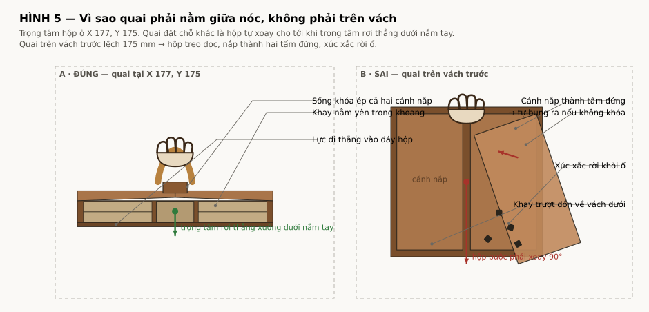
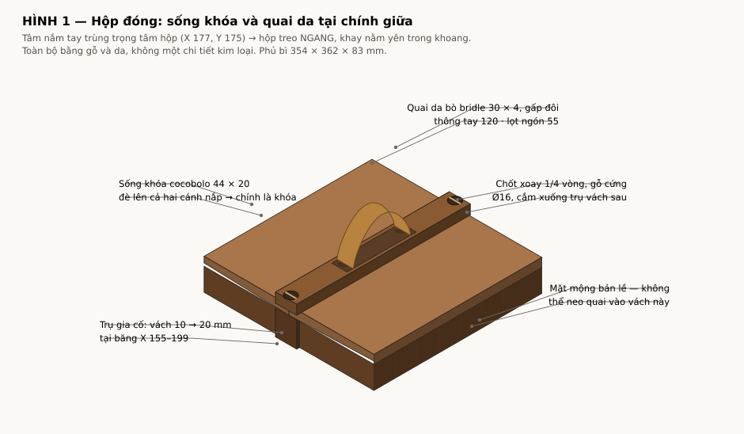
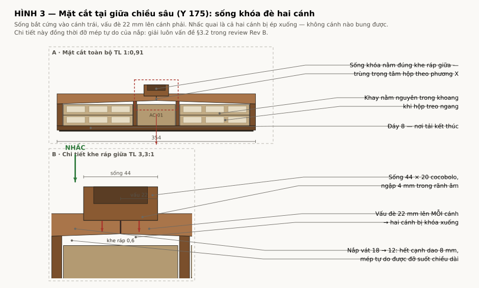
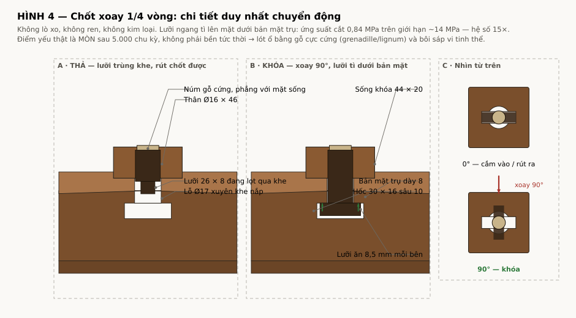
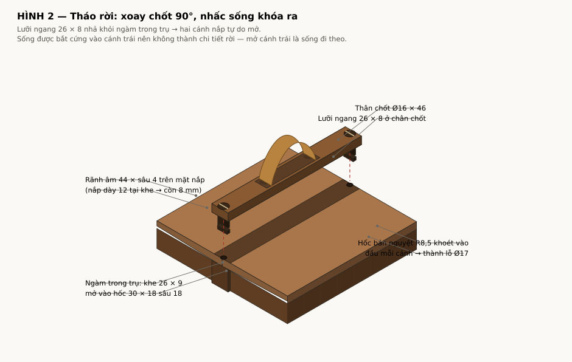

Trước khi bàn hình dáng quai, phải biết nó gánh bao nhiêu. Tính từ thể tích gỗ thực của Rev C cộng 152 quân ở 16 g/quân:
| Cấu tạo khay | Gỗ (kg) | + Quân (kg) | TỔNG (kg) |
|---|---|---|---|
| Khay cocobolo | 5,49 | 2,43 | 7,92 |
| Khay lõi ổn định | 4,72 | 2,43 | 7,15 |
Trọng tâm hộp nằm ở X 177, Y 175 (đối xứng hai trục). Vật treo luôn tự xoay cho tới khi trọng tâm rơi thẳng dưới điểm treo — nên vị trí quai không phải chuyện thẩm mỹ mà quyết định hộp treo ngang hay treo dọc.

Về kết cấu, mặt trên hộp chỉ có bốn chỗ có thể neo:
| Vị trí | Dùng được không |
|---|---|
| Vách trái/phải (X 0–10, 344–354) | Không — 314 trên 350 mm đã là mặt mộng bản lề |
| Vách trước/sau (Y 0–10, 340–350) | Được — liền khối với đáy, chịu lực tốt |
| Hai vách ngăn (X 136–142, 212–218) | Được, nhưng chỉ cách nhau 76 mm — quá hẹp để nắm |
| Cánh nắp | Không trực tiếp — cánh xoay tự do, sẽ bung ra |
Giao hai điều kiện lại: hai điểm neo phải nằm trên đỉnh vách trước và vách sau, tại X 177 — cách nhau 342 mm. Nắm tay 120 mm thì nằm giữa nhịp đó. Đó chính là hình dạng của sống khóa.

| Chi tiết | Kích thước | Ghi chú |
|---|---|---|
| Sống khóa | 362 × 44 × 20 | cocobolo đặc; ngập 4 mm trong rãnh âm trên mặt nắp |
| Quai da | 30 × 4, gấp đôi | da bò bridle; luồn qua hai khe 32 × 6, khâu tay khóa lại |
| Thông tay | 120 clear | lọt ngón 55 mm dưới quai |
| Chốt xoay | Ø16 × 46, 2 cái | gỗ cực cứng; lưỡi ngang 26 × 8 ở chân |
| Trụ gia cố | vách 10 → 20 | tại băng X 155–199, dày ra ngoài 6 và vào trong 4 |
| Phủ bì mới | 354 × 362 × 83 | 362 là đo qua hai trụ; 83 là 67 + sống nổi 16 |

Sống được bắt cứng vào cánh trái, vấu đè 22 mm lên cánh phải. Nhấc quai lên là cả hai cánh bị ép xuống trụ vách — không cánh nào bung được. Vì đầu cánh khi mở sẽ lùi ra xa khe giữa (xoay quanh mộng ở X 0), nên cánh phải trượt ra khỏi vấu đè một cách tự nhiên, không cần cơ cấu gì.
Sống chạy suốt 362 mm nên đồng thời đỡ mép tự do của nắp trên toàn bộ chiều dài — nhịp hở 330 mm nêu trong review Rev B §3.2 biến mất. Nhân đó đổi vát nắp từ 18 → 8 thành 18 → 12: vừa phay được rãnh âm sâu 4, vừa bỏ được cạnh dao 8 mm vốn rất dễ sứt.


Không lò xo, không ren, không kim loại. Cắm chốt xuống khi lưỡi ngang trùng với khe, xoay 90° là lưỡi nằm dưới bản mặt trụ. Sống được bắt cứng vào cánh trái nên không thành chi tiết rời — mở cánh trái là sống đi theo.
| Bộ phận | Ứng suất tính | Cho phép | Hệ số |
|---|---|---|---|
| Sống — uốn tại hốc quai | 11,8 MPa | 110 (MOR) | 9× |
| Sống — võng giữa nhịp | 0,92 mm | 1,14 (L/300) | đạt |
| Chốt — cắt qua lưỡi | 0,91 MPa | ~14 | 15× |
| Chốt — ép mặt gỗ | 0,73 MPa | ~10 | 14× |
| Da — kéo | 0,97 MPa | ~20 | 21× |
| Đường chỉ khóa — 8 mũi | 233 N | 720 N | 3,1× |
Nếu muốn tuyệt đối không dùng da: thay quai da bằng bail gỗ gập xoay trên hai trụ nhỏ mọc từ sống khóa. Cùng sống khóa, cùng chốt xoay, chỉ đổi phần nắm.
Giá phải trả là chiều cao. Bail gập nằm phẳng cần hốc sâu ~24 mm để chứa cả tay nắm tiết diện 30 × 18 lẫn hai càng. Sống phải cao 32 thay vì 20 → phủ bì lên 99 mm thay vì 83. Cộng thêm hai khớp xoay gỗ nữa vào danh sách chi tiết mòn.
Chọn B khi khách hàng đòi “không da”. Ngoài trường hợp đó thì A gọn hơn ở mọi mặt.
Không quai. Phay hai hốc âm lòng bàn tay vào vách trước và vách sau, mỗi hốc 120 × 30 sâu 16. Zero cơ cấu, zero chi tiết mòn, zero rủi ro, không đổi phủ bì.
Không phải “quai kiểu vali”, nhưng 7 kg chia hai tay là 3,5 kg mỗi bên — thoải mái, và hộp luôn được bê ngang nên không cần khóa nắp cho việc di chuyển. Vẫn phải giải bài toán khóa nắp riêng.
Với cấu hình đã chốt (7,9 kg) thì đây không còn là phương án dự phòng nữa mà là lựa chọn nghiêm túc: 3,96 kg mỗi tay là thoải mái, còn 7,92 kg một tay thì không.
| A · Sống + quai da | B · Bail gỗ gập | C · Hốc âm hai tay | |
|---|---|---|---|
| Giải luôn khóa nắp | Có | Có | Không |
| Đỡ mép tự do nắp (§3.2) | Có | Có | Không |
| Phủ bì | 354 × 362 × 83 | 354 × 362 × 99 | 354 × 350 × 67 |
| Chi tiết chuyển động | 2 chốt xoay | 2 chốt + 2 khớp bail | 0 |
| Kim loại | Không | Không | Không |
| Da | Có | Không | Không |
| Tay xách | Một tay · 7,92 kg | Một tay · 7,92 kg | Hai tay · 3,96 kg/tay |
| Rủi ro chế tạo | Trung bình | Cao | Thấp |
| # | Thay đổi | Lý do / hệ quả |
|---|---|---|
| 1 | Vách trước/sau dày 10 → 20 tại băng X 155–199 | +6 ra ngoài, +4 vào trong. Phủ bì Y qua hai trụ: 362 |
| 2 | Khay phụ kiện AC-01: 325 → 317 | Bố trí lại: 5+152+5+65+5+80+5 = 317. Rãnh Joker giữ 152 như review đề xuất |
| 3 | Vát nắp 18 → 8 đổi thành 18 → 12 | Góc 1,945°. Phay được rãnh âm sâu 4; bỏ được cạnh dao 8 mm dễ sứt |
| 4 | Hốc bán nguyệt R8,5 ở đầu mỗi cánh, tại Y 4 và Y 346 | Ghép thành lỗ Ø17 cho chốt xuyên qua khe ráp giữa |
| 5 | Ổ xúc xắc phải có nắp trượt gỗ | Chưa cần khi hộp nằm yên, nhưng xách là xúc xắc rời ổ |
| 6 | Phủ bì: 354 × 350 × 67 → 354 × 362 × 83 | Cao thêm 16 (sống nổi), sâu thêm 12 (hai trụ) |
| 7 | QA thêm: treo 29 kg/60 s, 5.000 chu kỳ nhấc | Thay cho mục “20 chu kỳ” hiện chỉ áp cho bản lề |
Khung nắp bằng cocobolo đẩy lượng gỗ Dalbergia mỗi hộp lên cao. Nếu ngưỡng miễn trừ 10 kg của annotation #15 vẫn đúng như tôi nhớ (phải xác minh), số hộp tối đa mỗi lô hàng là:
| Cấu tạo khay | Dalbergia / hộp | 2 hộp | 3 hộp | Tối đa / lô |
|---|---|---|---|---|
| Khay cocobolo | 4,84 kg | 9,67 | 14,51 | 2 hộp |
| Khay lõi ổn định | 3,21 kg | 6,42 | 9,62 | 3 hộp |
| # | Quyết định | Ảnh hưởng |
|---|---|---|
| 1 | Khay cocobolo (7,92 kg) hay lõi ổn định (7,15 kg)? | Quyết định luôn A/B hay C — và số hộp mỗi lô hàng CITES |
| 2 | Có dùng da không? | A hay B; chênh 16 mm chiều cao |
| 3 | Chấp nhận phủ bì 83 mm và hai trụ nhô 6 mm? | Nếu không thì chỉ còn C |
| 4 | Động học bản lề (review Rev B §2.5) đã chốt chưa? | Vị trí trục xoay đổi thì biên dạng đầu cánh đổi theo — sống khóa bám vào đó |
tools/handle_calc.py;
mọi hình vẽ sinh bằng tools/draw_handle.py. Đơn vị mm. Z = 0 tại mặt bàn;
X = 0 tại cạnh mộng trái, X = 177 tại khe ráp giữa nắp; Y = 0 tại vách trước.